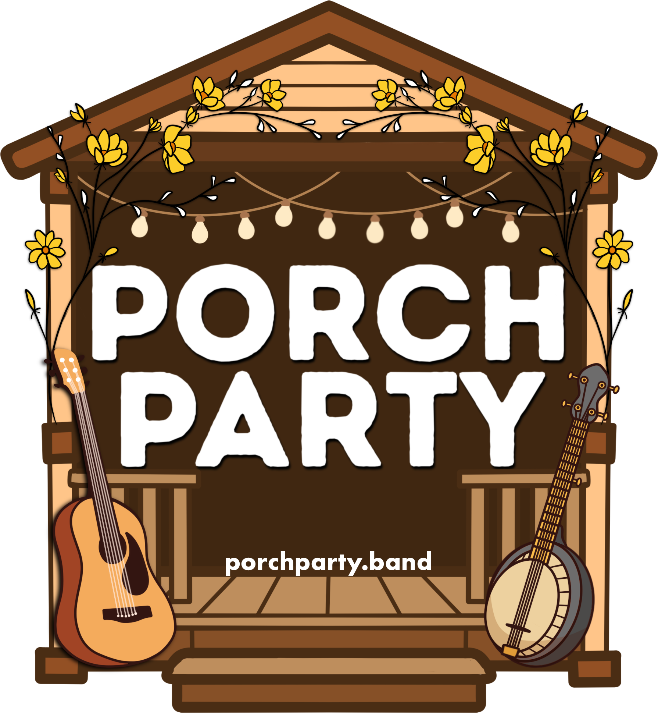
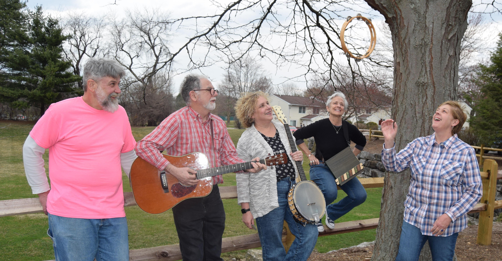
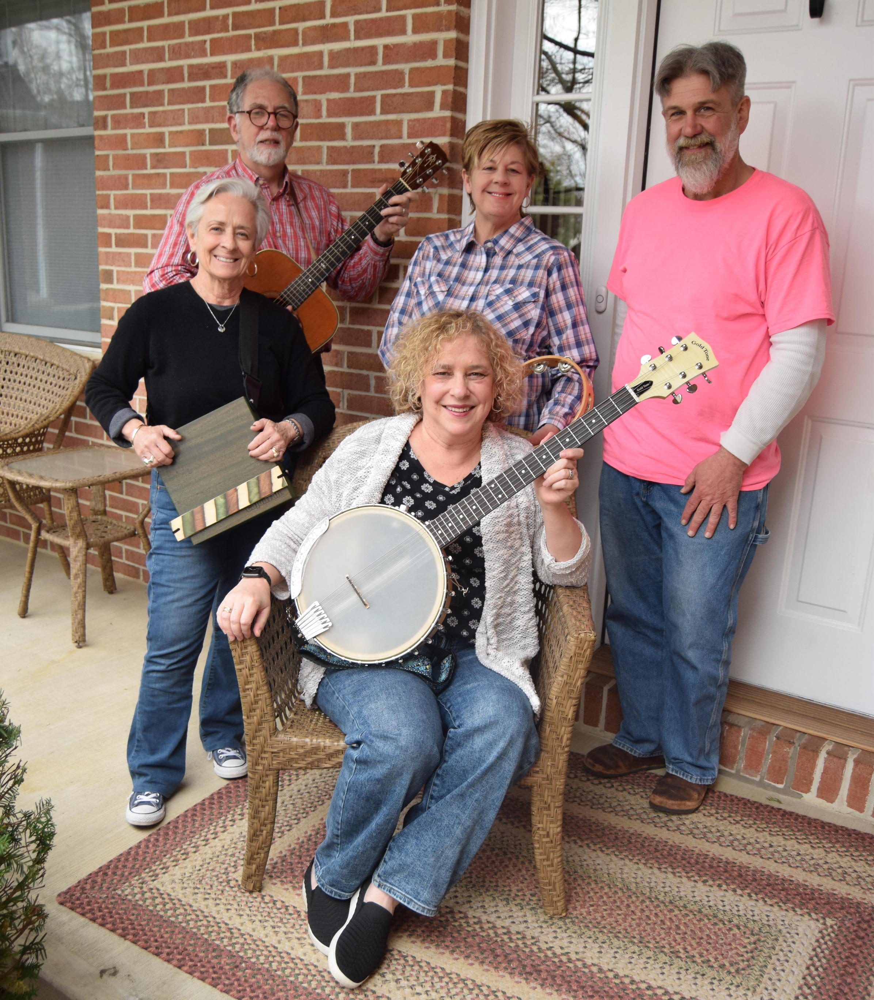

Events
January 30, 2026, 6-8p
Concert at Happy Valley Winery, State College, PA. Map
February 6, 2026, 5-8p
Clearwater Conservancy Art & Chocolate Celebration. Concert at 3 Dots Downtown, 137 East Beaver Ave, State College PA 16801. Map.
May 1, 2026, 6-8p
Concert at Happy Valley Winery, State College, PA. Map
May 29, 2026, 6-8p
Concert at Happy Valley Winery, State College, PA. Map
June 19, 2026, 6-8p
Concert at Happy Valley Winery, State College, PA. Map


About us
PorchParty is a group of seasoned musicians in Central Pennsylvania who have played in many local bands or solo over the past 20+ years. The group plays an eclectic selection of songs from the 60’s, 70’s and 80’s ranging from country to folk to classic rock.
The band
Michelle Katz on lead vocals, acoustic guitar, and banjo; Mickey Tomasetti on lead vocals, acoustic beatbox, and percussion; Liz Lasher on piano and harmonica; Tom Mallouk on bass and acoustic guitar, and Randy Doughty on fretless bass.
Keep in touch
Music
A sampling of the artists that we cover includes:
Tom Petty
Crosby, Stills, and Nash
John Denver
Nanci Griffith
Bob Dylan
Bonnie Raitt
Dolly Parton
Amy Winehouse
Indigo Girls
Beatles
Etta James
Bill Staines
Carly Simon
Tracy Chapman
Three Dog Night
Shambala by Three Dog Night
Sweet Dreams Will Come by Nanci Griffith and John Stewart
Baby Can I Hold You? by Tracy Chapman
Bright Lights, Big City by Jimmy Reed